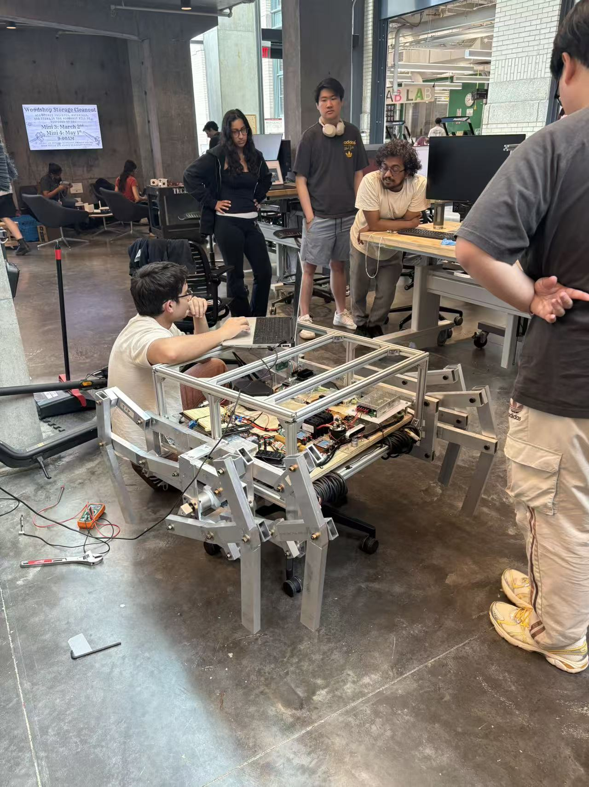
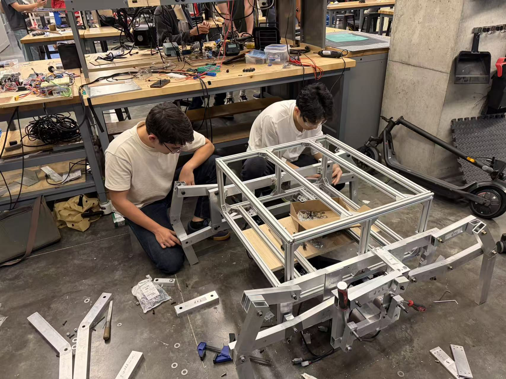
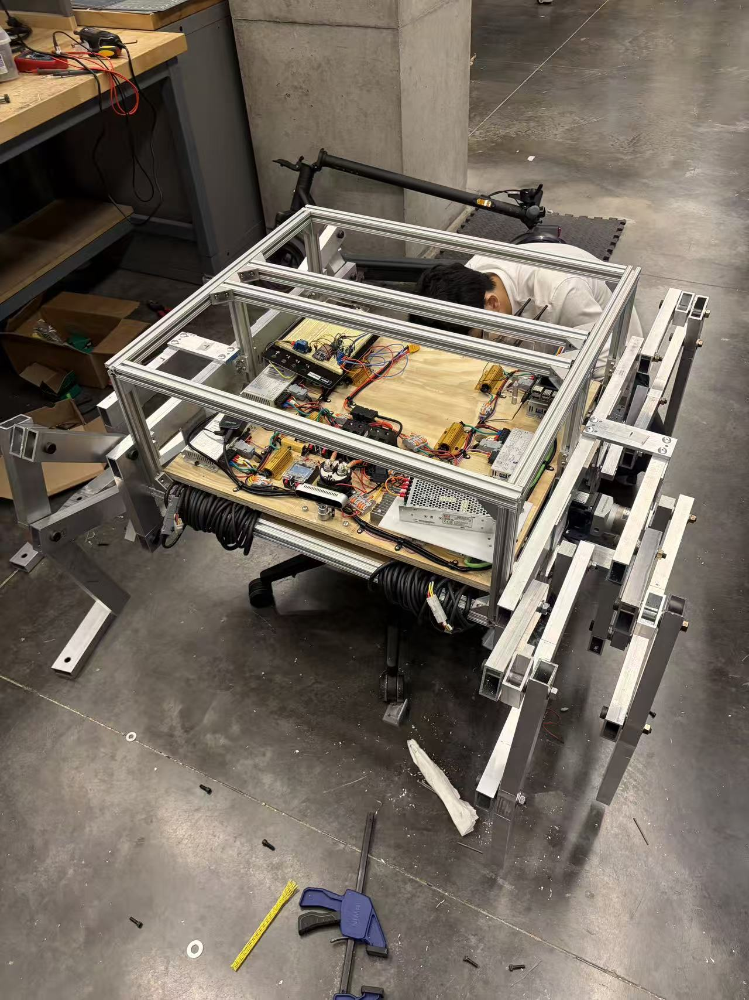
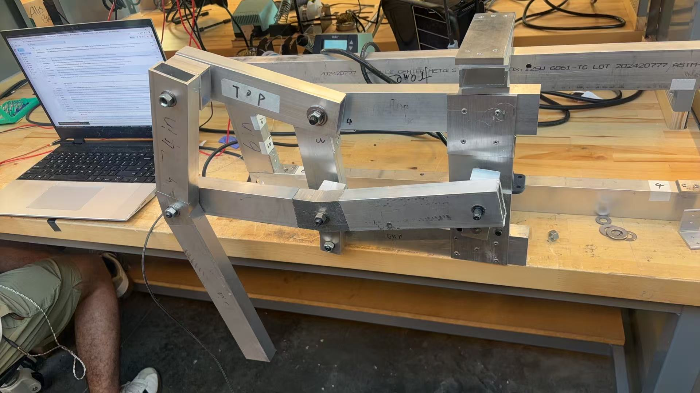

Mechatronic Design: Hexapod Dancing Robot
Jan 2026 - May 2026

Introduction
Small walking robots are useful teaching platforms because they make abstract mechatronic design choices visible: linkage geometry affects motion, motor selection affects stability, and packaging affects whether the robot can be assembled and repaired. This project used a hexapod dancing robot to explore those tradeoffs in a physical prototype.
Design Process
I iteratively modeled the robot in Fusion 360, moving from broad chassis concepts to detailed leg linkages, drivetrain placement, and electronics packaging. Each revision tested a known design question: whether the chassis left enough clearance for moving legs, whether the motor and gearbox footprint fit the body, and whether structural panels could be machined and assembled without creating tolerance conflicts.
I compared multiple chassis, drivetrain, and leg architectures using CAD studies and physical mockups. Motor and gearbox options were evaluated by torque, speed, backlash, footprint, and mounting needs. The final direction used an integrated drivetrain solution so the robot could coordinate repeated leg motion with fewer assembly conflicts.
Build Photos




My Contribution
- Created repeated CAD revisions for chassis layout, leg linkage geometry, motor placement, and component packaging.
- Managed prototype sourcing for motors, gearboxes, brackets, fasteners, and wood panels.
- Machined structural and electronics mounting panels through drilling, cutting, milling, and wood board fabrication.
- Supported mechanical-electrical integration, actuator mounting, gearbox alignment, and subsystem debugging.
Evaluation
The prototype was evaluated through fit checks, assembly trials, and repeated debugging cycles. The most effective design decisions were the ones that reduced interference between legs, motors, and panels while keeping the frame stiff enough for synchronized motion. The project also showed that early packaging studies save time during final integration because purchased components rarely match ideal CAD space exactly.